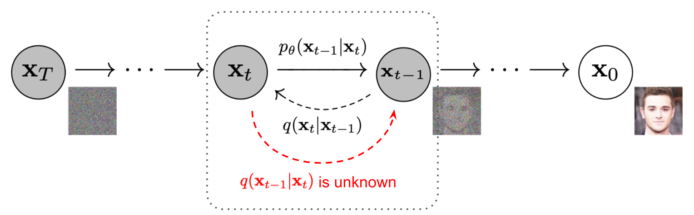
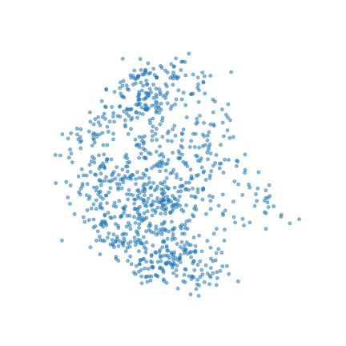
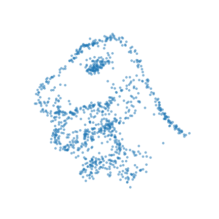
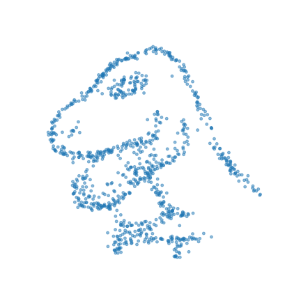
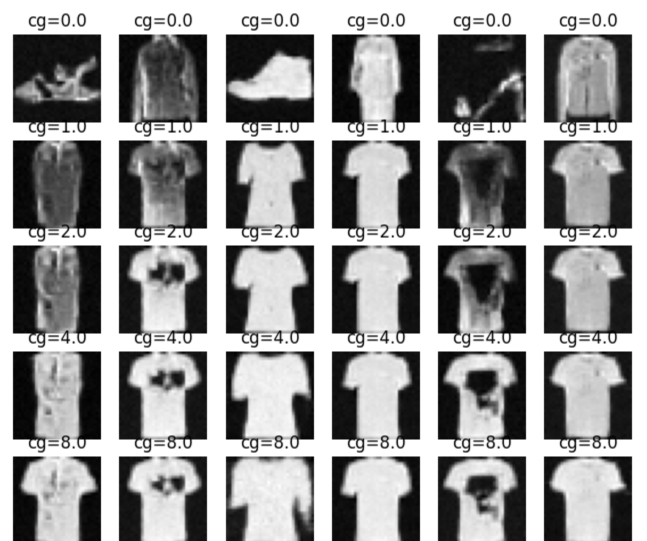
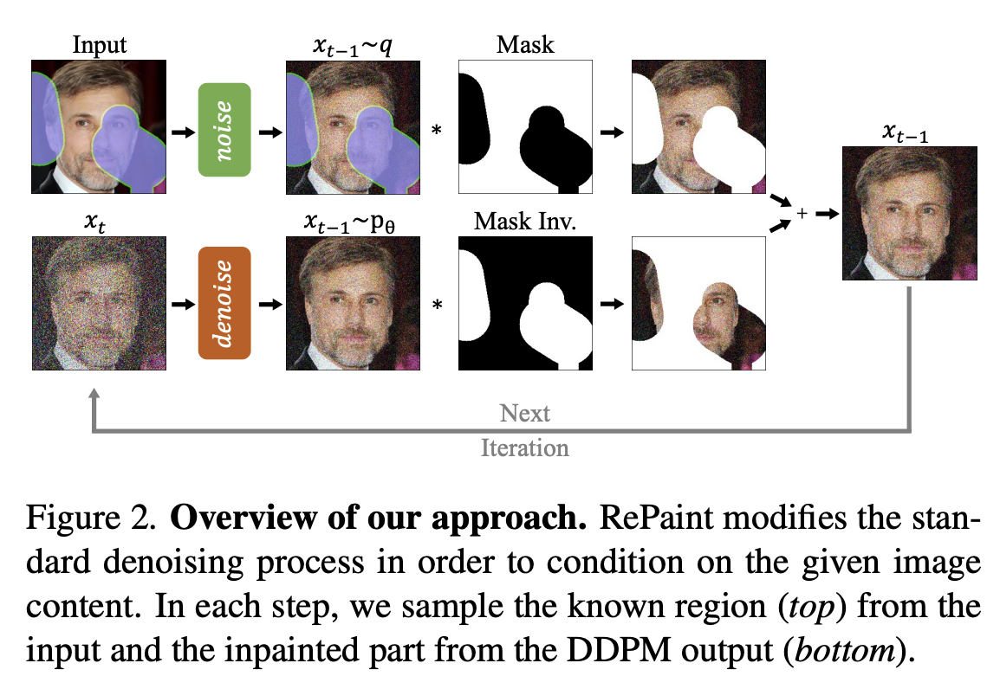
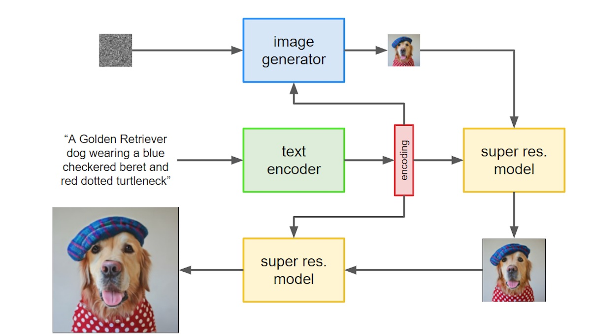
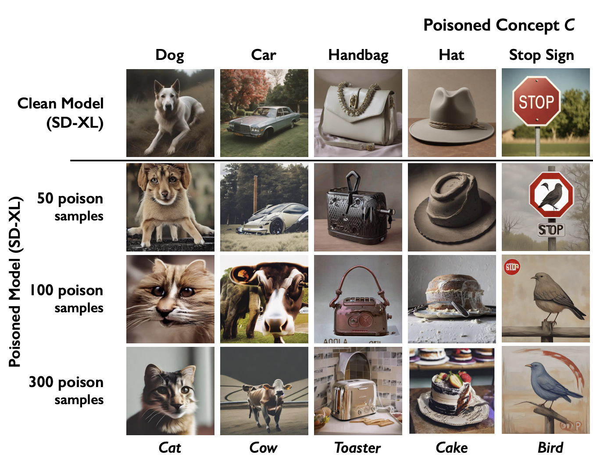

Contents
Diffusion Models
Notes on the theory behind models like Stable Diffusion and their applications.
I spent 2022 learning to draw and was blindsided by the rise of AI art
It's been two years, and image generation with diffusion is better than ever. It's also led to breakthroughs in animation, video generation, 3D modeling, protein structure prediction, and even robot trajectory planning. Where did it come from, how does it work and where is it going?
This post collects my notes on the theory of diffusion and applications to image generation and other tasks. Readers should know some probability theory (Bayes' rule, Gaussian distributions). Examples and code using PyTorch are provided.
1. Generative modeling
The basic problem of generative modeling is: given a set of samples from an unknown distribution \( \mathbf{x} \sim p(\mathbf{x}) \), we want to generate new samples from that distribution.
Generative adversarial networks treat this as a game: a generator model taking a random seed is trained to fool a discriminator, which is simultaneously trained to tell real samples from the
dataset from fake. GANs can synthesize amazing images but are notoriously hard to train. They do not explicitly model \( p(\mathbf{x}) \) and in practice end up incapable
A more explicit approach is to learn a deterministic, reversible mapping from the samples we have to a distribution which we know how to sample from, like the unit gaussian. Then we can sample a point from the known distribution and apply the inverse mapping to get a sample from \( p(\mathbf{x}) \). This is conceptually attractive and is called normalizing flows. Flows have also been used for images: OpenAI's 2018 Glow generated realistic images of faces with a semantically meaningful latent space.
Hover to play. Image via Eric Jang's blog. A normalizing flow learns a deterministic, probability-density-preserving mapping between the normal distribution and a 2D dataset.
1.1 Denoising diffusion models
What if instead of mapping data points to a normal distribution deterministically, we mapped points stochastically, by blending random noise into them?
This seems weird at first. Technically this mapping wouldn't be reversible, because a given data point could map to any point in the target space.
But suppose we were to do this over many steps, where we start with a clean data point, then blend in a small amount of noise, repeating many times until we have something that looks like pure noise.
- At any given time, looking at a single noisy datapoint, you can sort of tell where the datapoint might have been in the previous step.
- And given any point \( \mathbf{y} \) in the target space and any point \( \mathbf{x} \) in our original space, \( \mathbf{y} \) comes from \( \mathbf{x} \) with probability arbitrarily close to \( p(\mathbf{x}) \), depending on how much noise we choose to blend into our data. So if we learn to reverse the many-step process, we should be able to sample from \( p(\mathbf{x}) \). This is the idea of denoising diffusion.
This is like the physical process of diffusion, where a drop of ink slowly diffuses out to fill a tank by the random motion of individual ink particles.
A 2D dataset being mapped to the unit gaussian over 50 noising steps. Adjust the slider or click the previews below to see it in action.
Left: our 2D dataset with noise added at the current step. Right: the expected direction over all the directions a noisy point might have come from in the previous step.
Why might this stochastic mapping work better than the deterministic one that we get from normalizing flows?
One answer is that in practice, the invertibility requirement for flows is highly limiting. Not only does each layer of the flow network need to be invertible,
but the determinant of the Jacobian for each layer must be fast to compute.
Training works by adding random noise to each data point in our training set, having the model predict the noise, then minimizing the L2 loss between the prediction and the actual noise direction via gradient descent.
There are a few ways to sample from a pre-trained model. They boil down to:
- Start with a pure noise image.
- Predict the noise in it, and subtract a predefined fraction of it.
- Repeat (2) many times (10-1000 depending on the sampler), get a noise-free image.
If you're like me, you may be wondering a few things:
- Why do we estimate the noise direction rather than the de-noised image directly? In other words, how does estimating noise help us learn the distribution?
- Why does this process require so many steps?
- Why are there multiple ways to sample, and what's the difference between them?
2. DDPM
Let's take a look at the original approach, Denoising Diffusion Probabilistic Models
2.1 Noising and de-noising
Given an input image \( \mathbf{x}_0 \), we map it to a point in the unit normal distribution by iteratively blending noise to it in a forward diffusion process over \(t=1,2,…,T\) timesteps. Each timestep generates a new image by blending in a small amount of random noise to the previous one: $$ \mathbf{x}_t = \sqrt{\alpha_t}\mathbf{x}_{t-1} + \sqrt{1-\alpha_t}\epsilon $$ where:
- \(\epsilon \sim \mathcal{N}(0, \mathbf{I})\)
- \(\alpha_t\) is less than but close to \(1\), and \(\prod_{t=1}^T \alpha_t \approx 0\)
- The terms in square roots ensure that the variance remains the same after each step
We assume that the dataset is standardized, so that the variance of \(\mathbf{x}_0\) is 1 over all dimensions. . Notice how we are adding noise but shrinking the dataset at the same time.
We can write the probability density of the forward step as: $$ q(\mathbf{x}_t | \mathbf{x}_{t-1}) := \mathcal{N}(\sqrt{\alpha_t}\mathbf{x}_{t-1}, (1 - \alpha_t)\mathbf{I}) $$
Recurrence property
Each step depends only on the last timestep, and the noise blended in is independent of all previous noise samples. So we can expand the recurrence and derive an equation to obtain \(\mathbf{x}_t\) in one step from \(\mathbf{x}_0\) by blending in a single gaussian noise vector, since sums of independent gaussians are also gaussian: $$ \mathbf{x}_t = \sqrt{\bar\alpha_t}\mathbf{x}_0 + \sqrt{1-\bar\alpha_t}\epsilon $$ where \(\bar\alpha_t = \prod_{i=1}^t \alpha_i\) and \(\epsilon \sim \mathcal{N}(0, \mathbf{I})\). This is used to derive the reverse process which we want to learn, and the training objective where we predict the noise that we add to images.
Image via
Now consider the reverse process. Given a noisy image \( \mathbf{x}_t \), what's the distribution of the previous, less-noisy version of it \(q(\mathbf{x}_{t-1} | \mathbf{x}_t)\)?
This is easier if we know the original image \( \mathbf{x}_0 \). By Bayes' rule, we have: $$ q(\mathbf{x}_{t-1} | \mathbf{x}_t, \mathbf{x}_0) = \frac{q(\mathbf{x}_t | \mathbf{x}_{t-1}) q(\mathbf{x}_{t-1} | \mathbf{x}_0) q(\mathbf{x}_0)}{q(\mathbf{x}_t | \mathbf{x}_0) q(\mathbf{x}_0)} $$ Subbing in the distribution formulas and doing the algebra we get... $$ q(\mathbf{x}_{t-1} | \mathbf{x}_t, \mathbf{x}_0) = \mathcal{N}(\mu(\mathbf{x}_t, \mathbf{x}_0), \Sigma(t)\mathbf{I}) $$ where $$ \mathbf{\mu}(\mathbf{x}_t, \mathbf{x}_0) = \frac{\sqrt{\alpha_t}(1-\bar{\alpha}_{t-1})\mathbf{x}_t + \sqrt{\bar{\alpha}_{t-1}}(1-\alpha_t)\mathbf{x}_0}{1-\bar{\alpha}_t} \\ \Sigma(t) = \frac{(1-\alpha_t)(1-\bar{\alpha}_{t-1})}{1-\bar{\alpha}_t} $$ That is, given a noisy image and the known original image, the distribution of the previous, less-noisy version of it is gaussian.
What can we do with this information? When we're de-noising a noisy image we won't know the original corresponding to it. We want \( q(\mathbf{x}_{t-1} | \mathbf{x}_t) \).
Since we have a closed form solution for \(q(\mathbf{x}_{t-1} | \mathbf{x}_t, \mathbf{x}_0)\), if we could use the entire dataset at generation time, we could use the law of total probability to compute \(q(\mathbf{x}_{t-1} | \mathbf{x}_t)\) as a mixture of gaussians, but we can't (billions of images!) and moreover that would not give us the novelty we want, since if we followed it for all timesteps, we would just end up recovering the training samples. We want to learn some underlying distribution function which gives us novelty in generated samples by compressing the dataset.
2.2 Learning to de-noise
It turns out that \(q(\mathbf{x}_{t-1} | \mathbf{x}_t)\) is approximately gaussian for very small amounts of noise. This is an old result from statistical physics
Recall that the KL divergence is a metric measuring the difference between two probability distributions.
It's easy to compute for us because we are computing it between two gaussians with known parameters, so it has a closed form
The reverse distributions \(q(\mathbf{x}_{t-1} | \mathbf{x}_t, \mathbf{x}_0^{(1)})\) and \(q(\mathbf{x}_{t-1} | \mathbf{x}_t, \mathbf{x}_0^{(2)})\) conditioned on training samples \(\mathbf{x}_0^{(1)},\mathbf{x}_0^{(2)}\), and the distribution \(p_\theta\) that we learn by minimizing KL divergence to them.
👉 We can prove that minimizing \( L \) maximizes the likelihood of generating the dataset because it optimizes a lower bound for the same, through a process called variational inference.
For a proof, see the derivation of \(L_\text{VLB}\) on Lilian Weng's blog.
Concretely, let our training objective be:
$$
L = \mathbb{E}_{\mathbf{x}_{0:T} \sim q}[\sum_{t=1}^TD_{KL}(q(\mathbf{x}_{t-1}|\mathbf{x}_t, \mathbf{x}_0) || p_\theta(\mathbf{x}_{t-1}|\mathbf{x}_t))]
$$
where \(D_{KL}(q || p_\theta)\) is an expression
Ho 2020
We can simplify further and take advantage of the fact that \(\mathbf{x}_t\) can be written as a blending of \(\mathbf{x}_0\) with gaussian noise \(\epsilon\).
This means we can rewrite
Plugging this in turns our mean prediction problem into a noise prediction problem: $$ L = \sum_{t=1}^T\mathbb{E}_{\mathbf{x}_{0} \sim q,\epsilon}[\frac{(1-\alpha_t)^2}{2\Sigma(t)\alpha_t(1-\bar{\alpha}_t)}||\epsilon-\epsilon_\theta(\sqrt{\bar\alpha_t}\mathbf{x}_0 + \sqrt{1-\bar\alpha_t}\epsilon,t)||^2] $$
It turns out ignoring the weighting improves the quality of results
def train(model, train_data, alpha_min=0.98, alpha_max=0.999, T=1000, n_epochs=5):
opt = torch.optim.SGD([model.parameters()], lr=0.1)
alpha = torch.linspace(alpha_max, alpha_min, T)
alpha_bar = torch.cumprod(alpha, dim=-1)
for _ in range(n_epochs):
for x0s in train_data:
eps = torch.randn_like(x0s)
t = torch.randint(T, (x0s.shape[0],))
xts = alpha_bar[t].sqrt() * (1.-alpha_bar[t]).sqrt()
eps_pred = model(xts, t)
loss = torch.nn.functional.mse_loss(eps_pred, eps)
loss.backward()
opt.step()
opt.zero_grad()
2.3 Sampling
Once we've learned a noise estimation model \( \epsilon_\theta(\mathbf{x}_t, t) \), we've effectively learned the reverse process. Then we can use this learned model to sample an image \( \mathbf{x}_0 \) from the image distribution by:
- Sampling a random noise image \(x_T \sim \mathcal{N}(0, \mathbf{I})\).
-
For timesteps \(t\) from \(T\) to \(1\):
- Predict the noise \(\hat\epsilon_t = \epsilon_\theta(\mathbf{x}_t, t)\).
- Sample the de-noised image \(\mathbf{x}_{t-1} \sim \mathcal{N}(\frac{1}{\sqrt{\alpha_t}}(\mathbf{x}_t - \frac{1 - \alpha_t}{\sqrt{1 - \bar\alpha_t}}\hat\epsilon_t), \Sigma_\theta)\).
In code:
def sample(model, img_size, alpha, alpha_bar):
xt = torch.randn(img_size)
for t in reversed(range(T)):
with torch.no_grad():
eps_pred = model(xt, time_embedding(t))
alpha_bar_t = alpha_bar[t]
alpha_bar_t1 = alpha_bar[t-1] if t > 0 else 1.
sigma = ((1.-alpha[t])*(1.-alpha_bar_t1)/(1.-alpha_bar_t)).sqrt()
z = torch.randn(img_size)
mu_pred = (xt - (1.-alpha[t])/(1.-alpha_bar[t]).sqrt()*eps_pred)/alpha[t].sqrt()
xt = mu_pred + sigma*z
return xt
2.4 Summary and example
Let's summarize what we've learned about DDPM:
- We want to learn an underlying distribution for a dataset of images.
-
We do this by defining a forward noising process where we gradually turn an image \(\mathbf{x}_0\) into pure noise \(\mathbf{x}_T\) over many steps, and we learn to reverse the process by estimating the distribution of \(\mathbf{x}_{t-1}\) given \(\mathbf{x}_T\), which is feasible because:
- It's approximately gaussian when \(T\) is large.
- We know exactly what the distribution is if we assume the original image is some \(\mathbf{x}_0\) from our dataset.
- We can use the KL divergence to ensure what we learn is as close to these known distributions as possible for every \(\mathbf{x}_0\) in our dataset.
- This also provably maximizes the likelihood of re-generating our dataset.
- Finally, we can simplify the objective so it becomes a noise estimation problem.
Let's train a DDPM network on a 2D dataset. We will use the Datasaurus
dataset
The neural network will be a function from \(\mathbb{R}^2 \mapsto \mathbb{R}^2\). We'll start with a bog-standard MLP with 3 hidden layers of size 64 with ReLU activations. This architecture has 12,000+ parameters, so one might think there is a high chance of memorizing the dataset (284 numbers), but as we'll see, the distribution we learn will be pretty good: it will not only fit the training samples but will have high diversity.
After training, we can sample 1000 points to see how well it learned the distribution:
Oh no! That doesn't look anything like the dinosaur we wanted. What happened?
One problem is that we're not passing any timestep information to the model. The noise drift vectors look pretty different at higher timesteps compared to lower timesteps. Let's try passing the timestep \(t=0,...,50\) normalized to between \(0\) and \(1\) to our model, which now map \(\mathbb{R}^3 \mapsto \mathbb{R}^2\).

That's much better. But we can do better by using input encodings. These are fixed functions that transform the input before feeding them to the neural network,
and they can make a big difference. We will use a fourier encoding, since we know the distribution underlying our
data is like an image - a high-frequency signal in a low-dimensional (2D) space
For an input \(D\)-dimensional point \( \mathbf{x} \), we will encode it as: $$ \text{FourierEncoding}(\mathbf{x}) = \left[ \cos(2\pi\mathbf{Bx}), \sin(2\pi\mathbf{Bx}) \right]^T $$ here \(\mathbf{B}\) is a random \(L \times D\) Gaussian matrix, where each entry is drawn independently from a normal distribution. What we are doing is transforming the input space into a \(L\)-dimensional space of random frequency features. We'll set the hyperparameter \(L\) to 32.
Nice! Our distribution is looking pretty good. One more thing we can do is tweak our noising schedule. This can be crucial for performance.
-
Our noising schedule is based on Ho 2020
, who use a linearly decreasing sequence of \(\alpha_t\) where \(\bar\alpha_T=\prod_{t=1}^T\alpha_t\approx0\) so that the model spends a bit more time learning how to reverse lower noise levels, and the last timestep is close to pure noise. This works well for high-resolution images. - But our dataset is low-dimensional, and from the forward process visualization in §1.1, it already looks a lot like noise once we get about halfway through our process, and subsequent steps don't seem to destroy much more signal.
Image via
Let's adjust our schedule so that the model trains on more high-signal examples. This improves performance on lower-dimensional data while doing the opposite for higher-dimensional data
Left: our original and new \(\bar\alpha_t\) schedules. Right: 1000 samples from the trained model.
The original schedule already didn't take us to pure noise, with \(\bar\alpha_T \approx 0.28 \). The new schedule ends at where the old schedule was halfway, at \(0.6\).
3. Advances
3.1 Faster generation
A major disadvantage of diffusion when it was first invented was the generation speed due to the DDPM assumption that the reverse distribution is gaussian, which is only true for large \(T\). Since then, many techniques to speed up generation have been developed, some of which can be used out-of-the-box on models pre-trained using the DDPM objective, while others require new models to be trained.
Score matching and faster samplers
Diffusion has a remarkable connection to differential equations, which enabled many faster samplers to be created as we were able to tap into the rich literature of the latter.
First, it turns out that the noise direction that we learn to estimate given a noisy input \(\mathbf{x}_t\) is equivalent
From Calvin Luo's blog: Sampling by following the score function in a mixture of gaussians. These sampling trajectories all start from the center and have noise injected at each step. In the context of DDPMs, the noise is needed to model the reverse distribution correctly, while in the context of score-based models, the noise is needed to avoid having sampling just converge on a mode.
This formed the basis for noise-conditioning score networks, which learned the score of a progressively noised dataset and generated new samples by iteratively following the score field. If that sounds familiar, that's because it is basically the same as diffusion!
Second, it turns out that the forward diffusion process can be described by something called a stochastic differential equation (SDE) which tells us how the data
distribution evolves over time as we add noise to it. And here is the magic part: there exists an ODE that describes a deterministic process whose time-dependent
distributions are exactly the same as the stochastic process at each timestep, with a simple closed form involving the score function from above
Comparison of reverse SDE and ODE trajectories in a diffusion of a 1-dimensional dataset. The x-axis represents the timestep \(t\), while the y-axis represents the value of \(\mathbf{x}_t\). The color is the probability density of that value at that timestep. Notice how much straighter the ODE trajectory is, which suggests a way to "speed" sampling by stepping in larger increments.
Not only does this mean that there exists a fully deterministic
3.2 Conditional generation
Given a model trained on animal images, how do I generate only cats?
In principle, it's possible to model any type of conditional probability distribution \(p(\mathbf{x} | y)\) by training a diffusion
model \(\epsilon_\theta(\mathbf{x}_t, t, y)\) with pairs \(\mathbf{x}_0, y\) from the dataset. This was done by Ho 2021
Class-conditional generations for ImageNet from
However, the label can sometimes lead to samples that are not realistic or lack diversity if the model has not seen enough samples from \(p(\mathbf{x} | y)\) for a particular \(y\). So we often want to tune how much the model “follows” the label during generation. This leads to the concept of guidance.
Classifier guidance
Given an image \(\mathbf{x}_0\), a classifier gives a probability distribution
\(p_\phi(y|\mathbf{x}_0)\) that it lies in some class \(y\). If we take the gradient of that with respect to the input,
we get a vector \(\nabla_{\mathbf{x}_0}p_\phi(y|\mathbf{x}_0)\) which we can use to push the image
What if each sampling step, we added the classifier gradient with respect to \(\mathbf{x}_t\) to our estimated mean? Hopefully, the diffusion will ensure the sample will land in some plausible region of image space. To ensure our classifier knows what to do with the (potentially very noisy) image \(\mathbf{x}_t\), we'll train it on noisy images.
This turns out really well experimentally and mathematically. For DDPM, if we set our reverse step estimated mean to
$$
\mu_{\theta,\phi}=\mu_\theta + \sigma_t^2 * \nabla_{\mathbf{x}_t}\log p_\phi(y | \mathbf{x}_t)|_{\mathbf{x}_t=\mu_\theta}
$$
Then it can be shown to a first order approximation
The classifier used doesn't need to be particularly high-quality. For example, here are classifier-guided examples for the "T-shirt" class on Fashion-MNIST using a classifier with 40% accuracy:

The level of guidance parameter cg scales the classifier gradient. More guidance
leads to stronger class characteristics but possibly less realism.
Classifier-free guidance
Training a classifier takes extra work. Can we do guidance without one? Let's apply Bayes' rule to our class gradient: $$ \nabla_{\mathbf{x}_t}\log p(y | \mathbf{x}_t) = \nabla_{\mathbf{x}_t}\log p(\mathbf{x}_t | y) - \nabla_{\mathbf{x}_t}\log p(\mathbf{x}_t) $$ We have turned our class gradient into two score (§3.1) functions:
- \(\nabla_{\mathbf{x}_t}\log p(\mathbf{x}_t | y)\) is the score of the data \(\mathbf{x}_t\) conditioned on class \(y\).
- \(\nabla_{\mathbf{x}_t}\log p(\mathbf{x}_t)\) is the score of all the data \(\mathbf{x}_t\).
We have seen that denoising diffusion models learn the score of their training data, so this gives us an approach for guidance without a classifier:
- Train a single diffusion model on every training sample \(\mathbf{x}_0\) twice: once paired with its class label \(y\), and once paired with a null class label.
- When sampling from the model, call it twice: once with the desired class label and once without, then take the difference and use that as our guidance vector.
Image conditioning
Image-to-image
Image-to-image doesn't require retraining a model. Instead, given an input image, we can add noise to the image according to the desired strength of the conditioning image (less noise for stronger conditioning), then de-noise it.
Inpainting
Inpainting is filling in a masked part of an image. One idea to implement this would be via image-to-image: rather than adding noise to the whole image, we just add it to the masked part. But this doesn't work because at any \(t > 0\), the denoising model doesn't know what to do with the non-noisy parts of the image.

Image via
Instead, what works is to add noise to both the masked and un-masked parts of the image, and pass that in as \(\mathbf{x}_T\). Then at each subsequent sampling step \(t\), given \(\mathbf{x}_t\), we copy the un-masked parts of the original image, noise them according to \(t\), then place them over \(\mathbf{x}_t\) and use that as input into the denoiser.
Text-to-image

Imagen
Text-to-image is conditional generation with text embedding labels. OpenAI's Dall-E trained an encoding model called CLIP to
project both images and text into the same space
3.3 Data
While not specific to diffusion, no discussion of generative models is complete without mentioning the data they were trained on. This section will cover data used for image generation models.
Searching for 'cat' in LAION.
Searching for 'cat' in LAION-aesthetic.
- Dall-E 1 was trained on 250 million text-image pairs, and Dall-E 2 was trained on 650 million. The dataset is closed source.
- According to the HuggingFace model card, Stable Diffusion 1 was trained on LAION-2B-en (2 billion pairs), then fine-tuned on 170 million pairs from LAION-5B.
-
Subsequent checkpoints of Stable Diffusion 1 are fine-tuned on subsets of LAION-5B selected for “aesthetics”
From the LAION-aesthetic readme, as automatically labeled by a linear regression on CLIP trained on 4000 hand-labelled examples. . See this blog post for a look inside. -
LAION
itself is derived from the Common Crawl. LAION-400M was released in August 2021 and was an attempt to recreate the process used by OpenAI to train the CLIP model. The developers collected all HTML image tags that had alt-text attributes, and treated the latter as the image captions, using CLIP to discard those which did not appear to match their content. - Some users have also compiled lists of artists that appear in LAION. For example see MisterRuffian's Latent Artist Encyclopedia. The website haveibeentrained.com also allows users to check if their images are in LAION or other popular datasets.
A major component of the AI art backlash is the ethics of collecting art for datasets like LAION and training image generation models on them without
the consent of the artists, especially since image models can pose a direct threat to the livelihoods of those artists. However, there have been efforts to train
competitive image generation models more ethically
Data poisoning

Nightshade
The authors demonstrate an attack against Stable Diffusion XL using 50 images modified to cause the model to output a cow for every mention of “car” in its prompts. The modification is engineered to be as un-noticeable to the human eye as possible, by optimizing a multi-objective function involving perceptual loss.
An initial attack requires access to a model's feature extractor. The authors then examine how an attack based on 1 of 4 models performs on all the others, and say the results show their attack will generalize to models besides the initial model.
4. Beyond images
4.1 Audio, video, and 3D
Riffusion was an early music generation model capable of generating twelve-second long songs, notable because it was made by fine-tuning Stable Diffusion to output spectrogram images. Sonauto is a more recent and controllable model built on diffusion transformers, capable of generating 1:35-long songs with coherent lyrics.
From left to right: scaling compute 1x, 4x, and 32x with Sora.
OpenAI's Sora and Google's Veo are diffusion transformer video generation models capable of generating minute-long 1080p video clips from text prompts. At a high level, Sora works by decomposing videos into spacetime patches, then learning to denoise patches.
A key insight of the Sora technical report is that diffusion transformers scale for video generation,
and that performance scales with compute
One remarkable aspect of 2D diffusion models is that they implicitly learn some 3D features like correspondences
4.2 Life sciences
Diffusion models are finding many applications in medicine and biology. For example, performing partial CT and MRI scans
greatly reduces patient exposure to radiation and increases comfort, but is challenging because it requires reconstructing full scans from
partial data. Diffusion models have advanced the state-of-the-art in medical image reconstruction, providing superior performance and generalization
to supervised methods
A structure predicted by AlphaFold 3. Ground truth shown in gray.
Diffusion is also state-of-the-art in protein structure prediction, with DeepMind's AlphaFold 3 using a diffusion-based architecture and
showing significant improvements over both previous versions and specialized tools
Beyond AlphaFold, other applications of diffusion in computational biology include single-cell data analysis, drug and small molecule design, and protein-ligand interaction
4.3 Robotics
Video by Toyota Research Institute on how diffusion is enabling breakthroughs in robotics. See their blog post for more.
To interact with the real world, robots must be capable of a huge range of physical behaviors. Traditional approaches to get robots to do things like open doors or tie shoelaces involves explicitly programming numerous edge cases and ways to recover from them. While this works for controlled settings like factories, it does not scale.
Policy learning from demonstration is a more scalable approach where robots are instead taught how to perform tasks via human demonstrations, usually done by a human controlling the robot motors via teleoperation.
This may require anywhere from a dozen to hundreds of demonstrations, after which the robot is able to learn how to generate actions
conditioned on sensor observations and possibly natural language prompts. Diffusion models are state-of-the-art
policy generation models, showing substantial improvements over previous techniques, with powerful advantages like gracefully handling
multimodal action distributions, being suitable for high-dimensional action spaces, and exhibiting impressive training stability